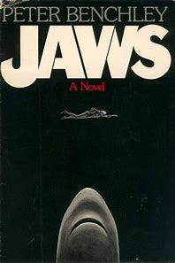
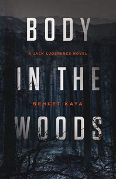
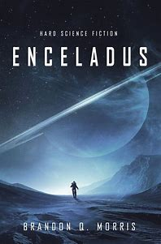

"The Last Four Things" by Paul Hoffman
Some readers appreciated the depth of the characters and the dark, complex world Hoffman created, but others found the book's pacing and focus on battles somewhat monotonous.
Ratings: 7/10

"Fortress of Blood" by L.D. Goffigan
Readers appreciate the fast-paced storyline and the development of the characters, particularly the relationship between Mina and Van Helsing. The book effectively summarizes the key points from the first installment, making it accessible to new readers.
Ratings: 8.3/10

"Hanging House" by Dean Rasmussen
The book seems to be a paranormal mystery with a dash of horror. Reviews mention that the book is well-written with a good pace and strong characters, especially Emmie.
Ratings: 9/10

"Frost Arch" by Kate Bloomfield
The book might explore themes of self-discovery, overcoming personal limitations, and the power of friendship or determination.
Ratings: 8.3/10
"Jaws" by Peter Benchley
The book explores the conflict between man and nature, particularly the fear and respect humans have for powerful predators.
Ratings: 9/10

"The Hobbit" by J.R.R. Tolkien
The Hobbit is a timeless adventure story that offers something for everyone. It's a great introduction to fantasy literature and the world of Tolkien's Middle-earth.
Ratings: 7/10

"The Outsider" by Stephen King
The novel explores the concepts of good vs. evil, the challenge of maintaining faith in the face of the inexplicable, the struggle to discern truth from deception, and the consequences of blind trust.
Ratings: 8.5/10

"The Past Is Rising" by Kathryn Bywaters
While not a super well-known book, readers who enjoyed it mention: A compelling story with a strong sense of good vs. evil. Interesting characters with potential for growth. A fast-paced plot that keeps you engaged.
Ratings: 7.5/10
"Body in the Woods" by Behcet Kaya
If you enjoy suspenseful and action-packed mystery novels with a strong, relatable main character, "Body in the Woods" is likely to be a satisfying read.
Ratings: 8/10

"Murder on the Orient Express" by Agatha Christie
"Murder on the Orient Express" is a masterpiece of detective fiction. It is a complex and suspenseful story with a surprising twist ending.
Ratings: 9/10
"Enceladus" by Brandon Q. Morris
If you're interested in hard science fiction with a compelling story set in a fascinating astronomical location, then "Enceladus" is a great choice.
Ratings: 7/10

"The Hypocrite World" by Umar Narejo
This book is a thought-provoking exploration of hypocrisy and its presence across various facets of society.
Ratings: 6/10